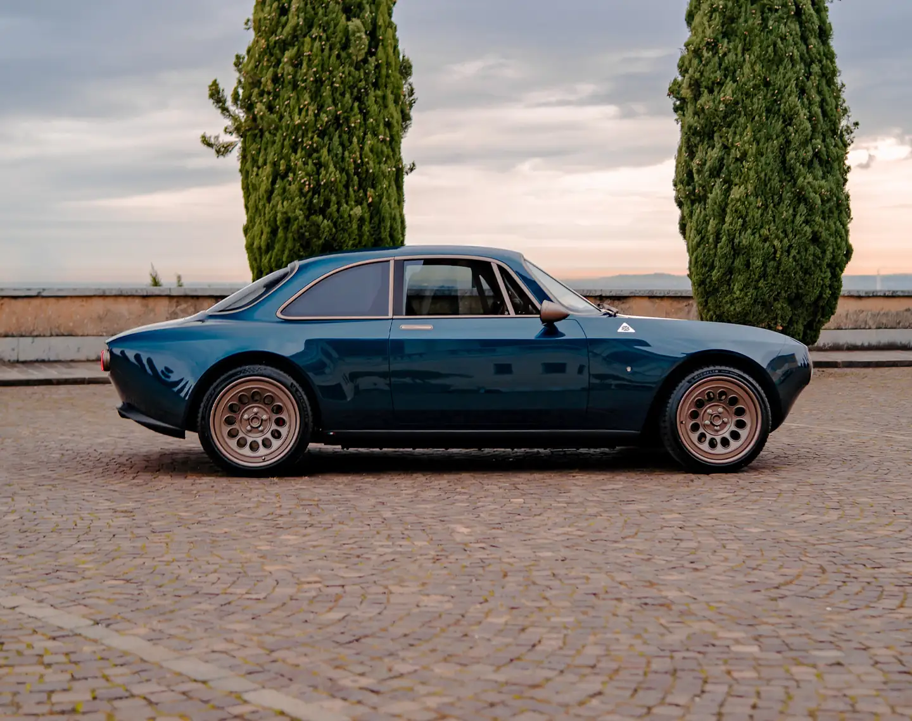
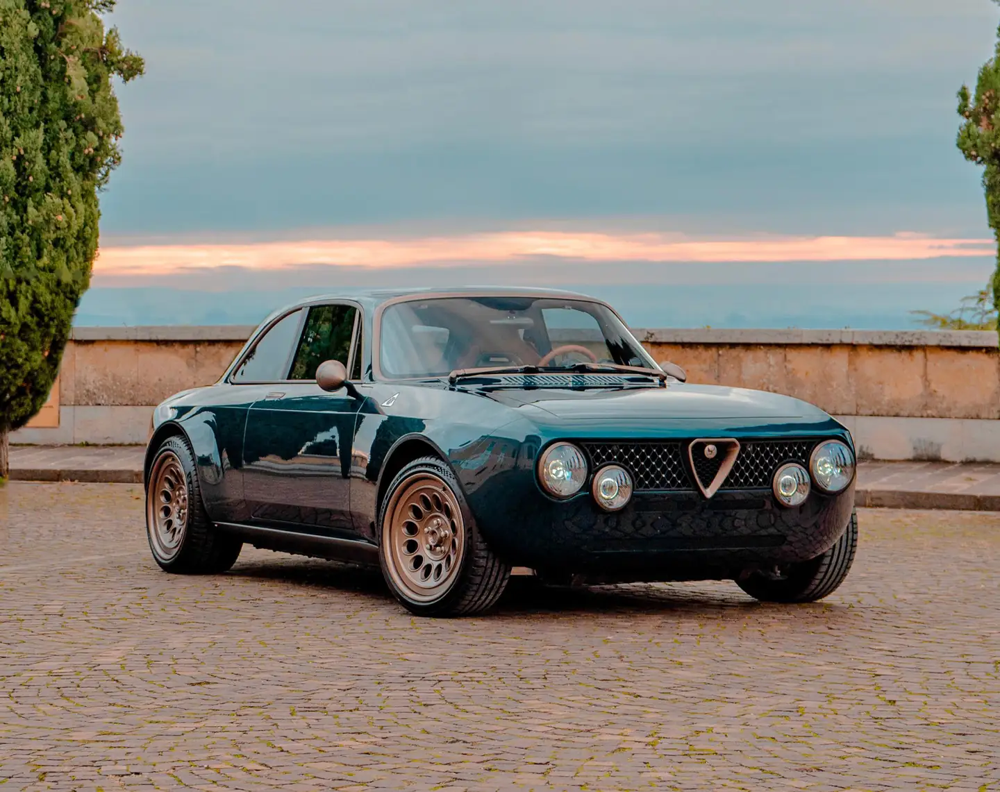
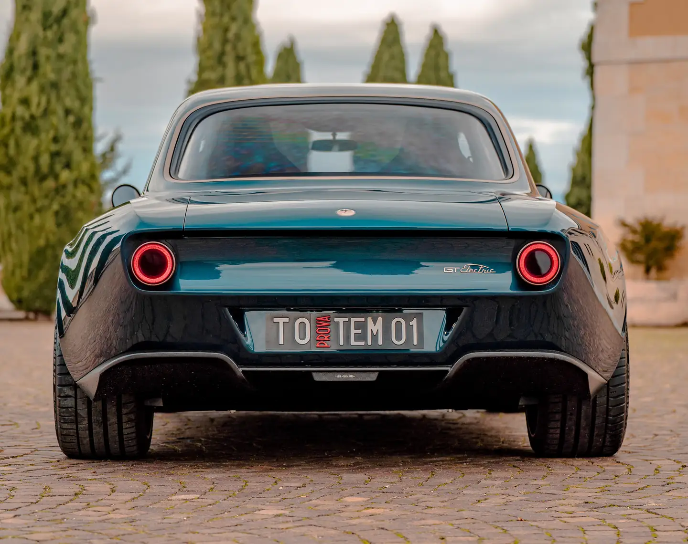
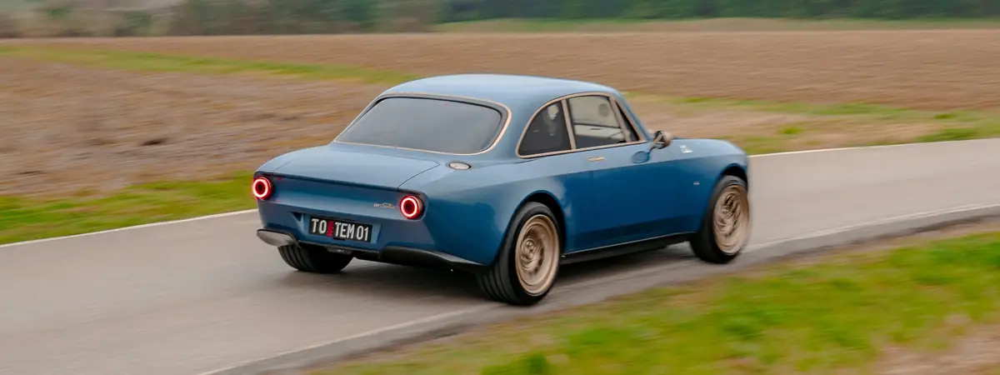
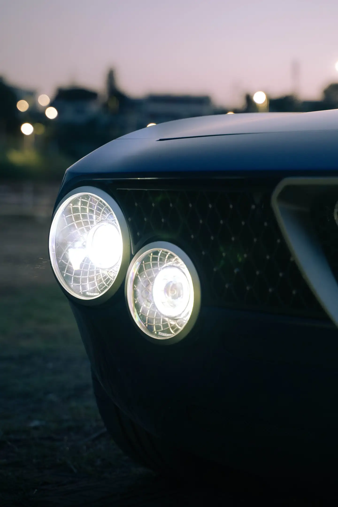
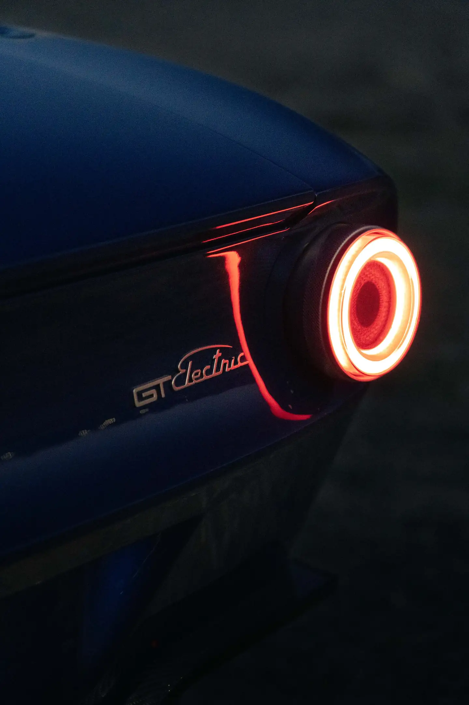

2.9s
0–100 km/h
590hp
Maximum power
900Nm
Maximum torque
210km/h
Top speed, limited
500km
Range, up to
01Italian Gran Turismo
A legend, reborn. In silence.
The GT Electric is the Totem GT in its most modern form. Torque arrives in an instant and without interruption, and the calm lets every detail of the road speak.
It keeps the silhouette that made an icon and redesigns everything beneath it: a carbon-fibre monocoque, aluminium subframes, double wishbones machined from solid and an electric powertrain developed with Italtecnica Engineering. It was the first Totem, and it remains the most serene.



Silent when you wish, vivid when you ask.
GT Electric “Freia”
Across the Alps.
02Powertrain
The artisanal soul of electric grand touring.
A rear-mounted electric drive unit with integrated inverter and limited-slip differential delivers 900 Nm to the rear wheels alone. Several drive modes, each with its own power-delivery map, have been conceived for electric driving; ABS can be set across multiple levels, and so can the dampers on request.

81kWh
Battery capacity
12
UN38.3 modules
90kW
DC fast charging, CCS
6.6kW
AC charging, Type 2


Charged at home, ready for the Alps.
At home, the single-phase on-board charger accepts up to 6.6 kW; on the road, CCS fast charging reaches 90 kW. The 81 kWh pack weighs 352 kg and gives a range of 400 to 500 kilometres at a grand-touring pace.
03Chassis
Sculpted skin, carbon anatomy.
At the heart of every Totem GT lies a carbon-fibre monocoque developed by Totem and its specialist partners, from raw materials born of decades of aerospace research. Composite sheets are laid into CNC-machined assembly jigs for outstanding structural accuracy.
Validated through finite-element analysis to US and EU passenger-safety requirements, the shell is joined to high-resistance 6082 aluminium subframes. From high-precision milled moulds, the wide body is rebuilt entirely in carbon fibre, its doors reinforced with aramid fibre.

75kg
Carbon-fibre monocoque shell
US–EU
Safety requirements, validated by FEA
100%
Carbon-fibre body panels
Suspension, machined from solid.
Beneath the carbon-fibre bodywork lie aluminium subframes, built by welding CNC-machined blocks to square-section tubes. They carry a double-wishbone suspension of Totem’s own design, machined from solid aluminium, at both the front and the rear.
The dampers are manually adjustable as standard. For those who ask for more, a higher-performance suspension is available, electronically adjustable front and rear through two dials in the cockpit.


Braking, made to measure.
Every GT Electric stops on Brembo aluminium monobloc fixed calipers, six pistons at the front and four at the rear, with cross-drilled, internally vented discs of 355 × 32 mm and 345 × 28 mm. Three Brembo systems then refine that character to the owner’s life.
| System | Character | Description | Finish |
|---|---|---|---|
| GT-M | Street to sport | Opposed-piston calipers and lightweight two-piece discs, cross-drilled or slotted, for precise modulation and strong resistance to fade. | Red, black, white or bespoke |
| GT-S | Street to sport | Lightweight slotted discs for consistent stopping in every condition, above all on wet and slippery surfaces. | Dark grey, red logo, or bespoke |
| GT-R | Track-oriented | Billet monobloc calipers from Formula 1 technology, nickel-plated against corrosion and made to withstand higher temperatures. | Nickel, red logo, or bespoke |
04Design
A signature in light.
Round lamps were the face of the great Italian coupés of the 1960s, and they remain the face of the Totem GT. Behind the classic outline, every light is LED: recognisable at a glance, by day and by night.
The outer rings of the headlights and tail lights are machined from solid and finished by galvanic treatment in the metal the client chooses.


Galvanic jewellery.
In counterpoint to the lacquer, every exterior brightwork element is finished in a galvanic tone of the client’s choosing: gold, bronze, platinum, nickel, aluminium, gunmetal or noir, glossy or satin. The same palette may be carried into the cockpit, so that metal speaks one language throughout the car.
05Interior
An analogue sanctuary, electrified.
Inside, the GT Electric keeps the analogue soul of every Totem: round instruments, machined switchgear and leathers chosen hide by hide, cut, stitched and fitted by our artisans.
A 3.5-inch screen with a vintage look carries navigation, DAB+, Bluetooth and USB, while an Audio Development hi-fi system is tuned to the cabin.
Seating.
Every Totem seat is shaped around the person who sits in it. Three characters, endless configurations: leathers, cloths, stitching and shells combine freely.

Dolcevita 
The comfort seat, made by Sabelt for Totem to a Totem design: a sculpted shell with signature horizontal pleats, electrically adjustable in six ways.

Clubsport
A carbon-fibre bucket pared back to the essential, with harness openings, deep lateral support and the lowest possible weight.

Bespoke
Through the Totem Individual Program: bespoke inner trims, embroidered ribbons, silks and weaves, shaped around a single client.
06Personalisation
Yours, down to the stitch.
Paint matched to any sample, three carbon weaves, billet wheels, galvanic finishes, leathers chosen hide by hide. And beyond the catalogue, the Totem Individual Program.


07Technical details
Propulsion and technical data.
The figures of the GT Electric as built to its standard specification.
Powertrain & battery
- Power unit
- Italtecnica Engineering, rear-mounted
- Max power
- 590 hp (434 kW)
- Max torque
- 900 Nm
- Gearbox
- Automatic with limited-slip differential
- Traction
- Rear-wheel drive
- Drive modes
- Multiple, with dedicated power maps
- Battery
- 81 kWh, twelve UN38.3 modules, aluminium honeycomb case
- Battery weight
- 352 kg
- AC charging
- Type 2, up to 6.6 kW
- DC charging
- CCS, up to 90 kW
- Range
- 400–500 km
Performance
- 0–100 km/h
- 2.9 s
- Top speed
- 210 km/h, electronically limited
Dimensions & weight
- Length
- 4,274.5 mm
- Width
- 1,859 mm
- Height
- 1,316 mm
- Wheelbase
- 2,500 mm
- Turning circle
- 13 m
- Weight
- 1,490 kg
- Seats
- 2
- Luggage
- 165 l
Chassis & body
- Chassis
- Carbon-fibre monocoque, CNC aluminium front and rear subframes
- Body
- Full carbon fibre
- Doors
- Carbon fibre reinforced with aramid
- Suspension
- Billet aluminium double wishbones, ORAM dampers
- Steering
- Electric or electro-hydraulic assistance
Brakes, wheels & tyres
- Front brakes
- Brembo 6-piston monobloc, 355 × 32 mm discs
- Rear brakes
- Brembo 4-piston monobloc, 345 × 28 mm discs
- ABS
- Adjustable, 12 positions
- Wheels
- 18" billet aluminium monobloc, GTA or Millerighe
- Tyres
- Michelin Pilot Sport 5S or Pilot Sport Cup 2
Lighting & infotainment
- Lighting
- Full LED, machined bezels
- Infotainment
- 3.5" vintage-styled screen, navigation, DAB+, Bluetooth, USB
- Audio
- Audio Development hi-fi, 60 W
Specifications, performance and range figures are indicative, may vary with configuration and market, and do not constitute a contractual offer.
08Visual archives
The GT Electric, as its owners know it.
The cars photographed on the roads, villas and coastlines where they belong. Select any image to enlarge it.
On the road
Inside
In detail

09Brochure
The GT Electric, in print.
30 pages · PDF · 6.5 MB. Every chapter of the car, from the carbon anatomy to the visual archives of its commissions.